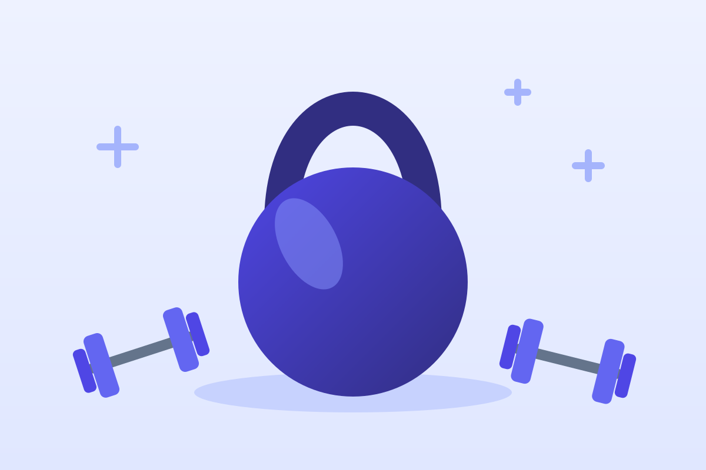

Силовые тренировки для начинающих
Силовые нужны не только ради рельефа. Они сохраняют мышцы и кости, помогают контролировать вес и делают повседневные дела — от переноски сумок до подъёма по лестнице — заметно легче.

Зачем это нужно
- Мышцы. Примерно с 30 лет мышечная масса постепенно уменьшается, а с возрастом этот процесс ускоряется. Силовые тренировки его замедляют.
- Кости. Нагрузка стимулирует укрепление костной ткани и снижает риск остеопороза.
- Обмен веществ. Тренированные мышцы лучше чувствуют инсулин и помогают держать уровень сахара в норме.
- Повседневная жизнь. Сильные ноги, спина и мышцы корпуса — это хорошая осанка, равновесие и меньший риск падений в пожилом возрасте.
Сколько нужно
ВОЗ рекомендует взрослым силовые упражнения на все основные группы мышц не реже двух дней в неделю. Для начала хватит двух-трёх тренировок по 30–45 минут.
Основные принципы
- Сначала техника, потом вес. Освойте движение с собственным весом или лёгким снарядом.
- Прогрессия. Мышцы растут, когда нагрузка постепенно увеличивается: больше вес, больше повторений или сложнее вариант упражнения.
- Подходы и повторения. Новичку подойдут 2–3 подхода по 8–12 повторений.
- Запас в 1–3 повторения. Заканчивайте подход, когда чувствуете, что могли бы сделать ещё 1–3 повторения с хорошей техникой. Работать до отказа не обязательно.
- Отдых. 1–2 минуты между подходами, до 3 минут в тяжёлых базовых упражнениях. Одну и ту же группу мышц нагружайте не чаще чем раз в 48 часов.
Шесть базовых движений
Почти любую программу можно собрать из шести движений, которые повторяют то, что мы делаем в обычной жизни:
- Присед — как сесть на стул и встать.
- Наклон с ровной спиной (становая тяга, ягодичный мост) — как поднять предмет с пола.
- Жим (отжимания, жим гантелей) — как оттолкнуть от себя тяжёлую дверь.
- Тяга (тяга гантели в наклоне, подтягивания) — как притянуть дверь к себе.
- Выпад — как подняться по высоким ступеням.
- Удержание корпуса (планка) — как стоять ровно с тяжёлой сумкой в руке.
Программа для новичка
Тренировка на всё тело 2–3 раза в неделю — например, в понедельник, среду и пятницу. Перед началом 5–7 минут разминки: ходьба на месте, вращения в суставах, пара лёгких подходов первого упражнения.
| Упражнение | Подходы × повторы | Дома | В зале |
|---|---|---|---|
| Приседания | 3 × 10–12 | С весом тела | С гантелью у груди |
| Ягодичный мост | 3 × 12–15 | На полу | С гантелью на бёдрах |
| Отжимания | 3 × 8–12 | От стола или от пола | Жим гантелей лёжа |
| Тяга | 3 × 10–12 | Тяга эспандера к поясу | Тяга гантели в наклоне |
| Выпады назад | 2 × 8 на ногу | С весом тела | С гантелями |
| Планка | 3 × 20–40 с | На предплечьях | На предплечьях |
Генератор тренировки
Надоела одна и та же программа? Нажмите кнопку — и получите новый набор из пяти упражнений: ноги, грудь и руки, спина, корпус и кардио. Подходит для дома: из инвентаря понадобятся разве что устойчивый стул или эспандер.
Случайная тренировка
Сделайте 2 круга, между кругами отдых 90 секунд.
Начните с разминки 5–7 минут. Если упражнение вызывает боль — замените его или пропустите.
Как прогрессировать
Записывайте вес и повторения — в блокноте или приложении. Когда во всех подходах получается верхняя граница повторений (например, 3 × 12) с чистой техникой, увеличьте нагрузку: добавьте 1–2,5 кг или перейдите к более сложному варианту — от отжиманий от стола к отжиманиям от пола.
Сила обычно заметно растёт уже через 4–6 недель. Видимые изменения в мышцах чаще всего появляются через 2–3 месяца регулярных занятий.
Восстановление
- Крепатура — ноющая боль в мышцах через 24–72 часа после непривычной нагрузки — нормальна и проходит сама. Лёгкое движение помогает её пережить.
- Острая боль в суставе или боль, которая усиливается во время упражнения, — сигнал остановиться.
- Сон и белок — главные «добавки» для роста мышц. Сколько белка нужно вам, подскажет калькулятор белка.
Безопасность
- Не задерживайте дыхание: выдох — на усилии, вдох — при возвращении в исходное положение.
- Держите спину в нейтральном положении, без округления в пояснице.
- Не гонитесь за весом: рывки и «читинг» — частая причина травм.
- Если вы новичок, одно-два занятия с квалифицированным тренером помогут поставить технику.